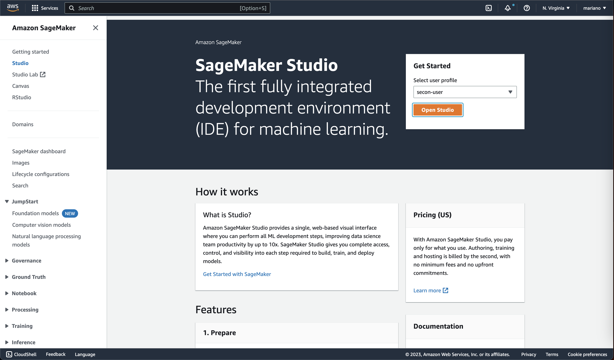
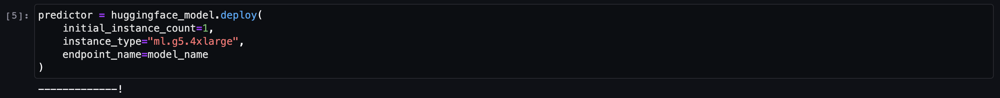
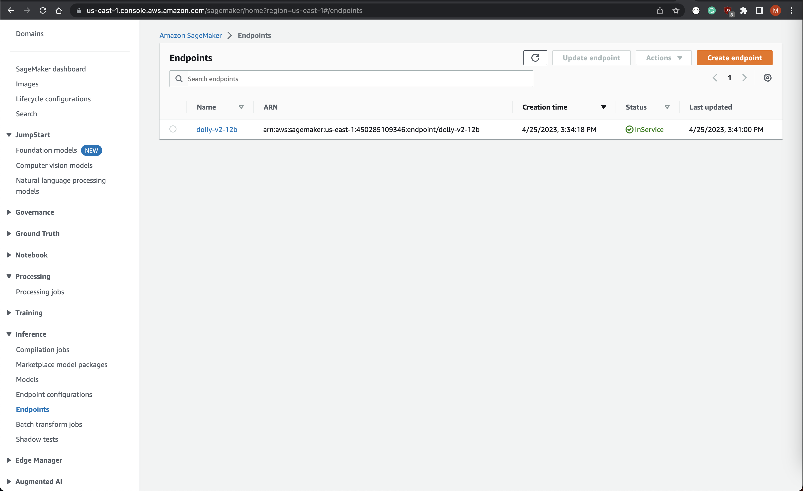

Introduction to MLOps With SageMaker: Running your First LLM
Introduction
As the field of machine learning advances, it has become increasingly important for organizations to develop robust practices for managing their workflows. That’s where MLOps comes in - a set of best practices and tools for managing the entire lifecycle of machine learning models, from development to deployment and beyond.
In this blog post, we’ll delve into how MLOps practices can be leveraged to deploy an LLM in AWS SageMaker, using the popular Hugging Face Transformers library. We’ll cover everything from setting up an end-to-end pipeline for deploying a Large Language Model on SageMaker, to monitoring its performance.
By the end of this post, you’ll have a better understanding of the key components of an MLOps workflow, and how they can be used to streamline the deployment of complex machine learning models in production environments. Whether you’re an experienced machine learning practitioner or just starting out, this post will provide valuable insights into the cutting-edge tools and techniques driving the field forward.
Getting Started
Prerequisites - Runtimes
Install the following binaries on your machine:
brew install awscli
brew install go-task
brew install terraformPrerequisites - AWS Resources
Make sure your have an AWS account configured:
cat ~/.aws/config
aws_access_key_id = [REDACTED]
aws_secret_access_key = [REDACTED]- Clone the repo:
git clone https://github.com/eschizoid/secon-2023.git - Run terraform init to check the provider loaded as expected:
task tf_init - Run terraform plan
task tf_plan - Create SageMaker domain, user profile, and JupyterServer instance:
task tf_apply
Creating model.tar.gz file
-
The first step is to create a folder structure like the following:
model.tar.gz/ |- model/code/ |- inference.py |- requirements.txt -
Using the SageMaker Hugging Face Inference Toolkit, we can reference Dolly in SageMaker by creating a function like the one below in the file
inference.py. By doing this we will be overwriting themodel_fnfunction:import torch from transformers import pipeline def model_fn(model_dir): instruct_pipeline = pipeline( model="databricks/dolly-v2-12b", torch_dtype=torch.bfloat16, trust_remote_code=True, device_map="auto", model_kwargs={"load_in_8bit": True}, ) return instruct_pipeline -
Finally, upload model to S3:
task tar_model task upload_model
Provisioning JupyterServer
Once the infrastructure is up and running and the model reference has been uploaded to S3, you can access the JupyterServer by clicking the button “Open Studio” in the SageMaker console:

Deploying LLM - Dolly V2 12B
From the JupyterServer, you can import the git repo and reference the
notebook notebooks/deploy-to-sm-endpoint.ipynb.
After executing all the previous cells from the notebook, you can proceed to deploy the model like the image below shows:

NOTE
It’s important to mention that this step might take a couple of minutes to complete.
You can verify the model was deployed successfully by checking the SageMaker endpoint status on the AWS Console:

Consuming SageMaker Endpoint
We can use the Streamlit to create a fast application and test the model inference:
import json
import boto3
import streamlit as st
def generate_text(input_prompt: str) -> str:
payload = {
"inputs": input_prompt,
"min_length": min_length,
"max_length": max_length,
"temperature": temperature,
"repetition_penalty": rep_penalty,
"do_sample": temperature > 0,
}
response = sagemaker_runtime.invoke_endpoint(
EndpointName=endpoint_name,
ContentType="application/json",
Body=json.dumps(payload)
)
result = json.loads(response["Body"].read().decode())
return result[0]["generated_text"]
session = boto3.Session()
sagemaker_runtime = session.client("sagemaker-runtime", region_name=session.region_name)
endpoint_name = "dolly-v2-12b"
st.sidebar.title("Dolly-V2 Parameters")
stop_word = st.sidebar.text_input("Stop word")
min_length, max_length = st.sidebar.slider("Min/Max length", 0, 500, (0, 100))
temperature = st.sidebar.slider("Temperature", min_value=0.0, max_value=1.0, value=0.6)
rep_penalty = st.sidebar.slider("Repetition Penalty", min_value=0.9, max_value=1.2, value=1.0)
st.header("Dolly-v2-12B Playground")
prompt = st.text_area("Enter your prompt here:")
if st.button("Run"):
generated_text = generate_text(prompt)
if len(stop_word) > 0:
generated_text = generated_text[:generated_text.rfind(stop_word)]
st.write(generated_text)And finally execute the following command to deploy using docker:
task run_playground

You will be able to access the playground on: http://localhost/8501/
Bonus: More sophisticated workflows
You can build need more sophisticated workflows by templating the prompts
using langchain. The following are just a few examples of what you can do by
combining langchain and SageMaker:
!pip install langchain
!aws configure set aws_access_key_id [REDACTED]
!aws configure set aws_secret_access_key [REDACTED]
!aws configure set default.region us-east-1import json
from langchain import SagemakerEndpoint
from langchain.llms.sagemaker_endpoint import LLMContentHandler
class ContentHandler(LLMContentHandler):
content_type = "application/json"
accepts = "application/json"
def transform_input(self, prompt: str, model_kwargs) -> bytes:
input_str = json.dumps({prompt: prompt, **model_kwargs})
return input_str.encode('utf-8')
def transform_output(self, output: bytes) -> str:
response_json = json.loads(output.read().decode("utf-8"))
return response_json[0]["generated_text"]
se = SagemakerEndpoint(
endpoint_name="dolly-v2-12b",
region_name="us-east-1",
credentials_profile_name="default",
content_handler=ContentHandler(),
)
se("Tell me a joke")from langchain import PromptTemplate, LLMChain
prompt_template = "Why is {vegetable} good for you?"
llm_chain = LLMChain(llm=se, prompt=PromptTemplate.from_template(prompt_template))
llm_chain("brocolli")["text"]import time
from langchain.chains import LLMChain
from langchain.prompts import PromptTemplate
def generate_serially():
prompt = PromptTemplate(
input_variables=["product"],
template="What is a good name for a company that makes {product}?",
)
chain = LLMChain(llm=se, prompt=prompt)
for _ in range(5):
resp = chain.run(product="underwear")
print(resp)
s = time.perf_counter()
generate_serially()
elapsed = time.perf_counter() - s
print('\033[1m' + f"Serial executed in {elapsed:0.2f} seconds." + '\033[0m')prompt_template = "Tell me a {adjective} joke"
llm_chain = LLMChain(
llm=se,
prompt=PromptTemplate.from_template(prompt_template)
)
llm_chain(inputs={"adjective": "corny"})Cleaning up resources
To clean up the resources created by this project, you can run the following command:
task tf_destroy